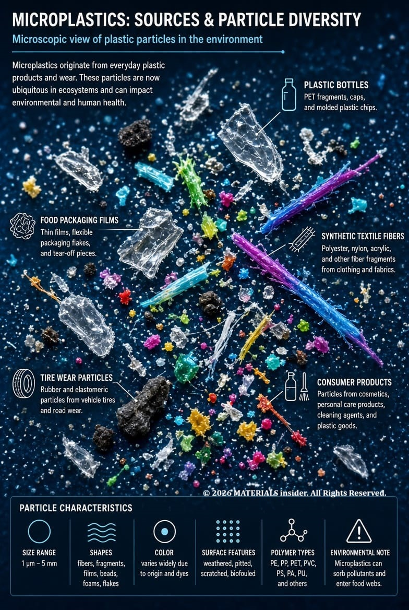
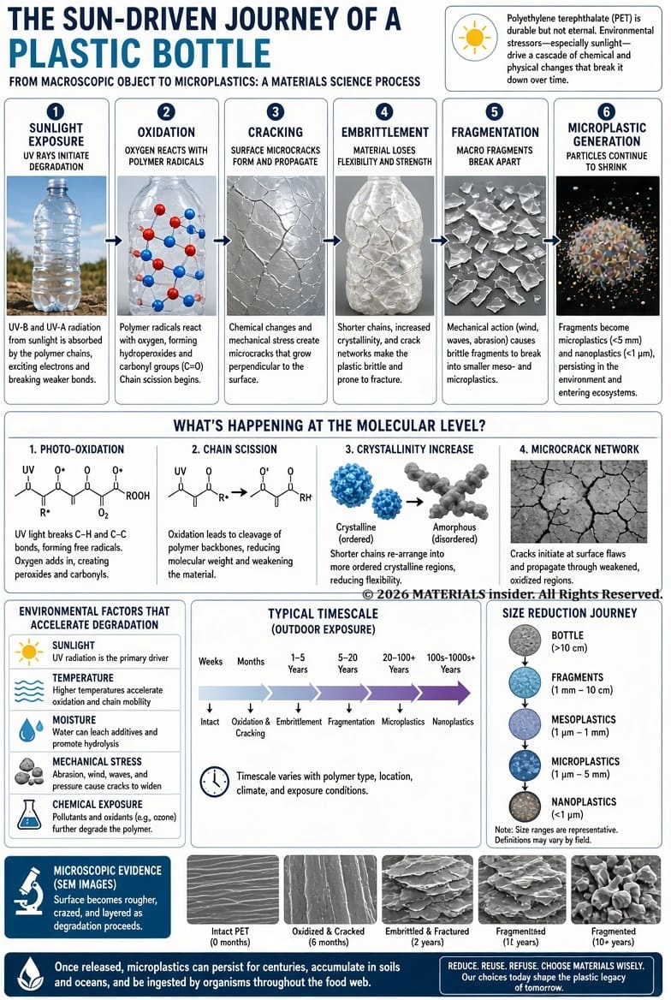
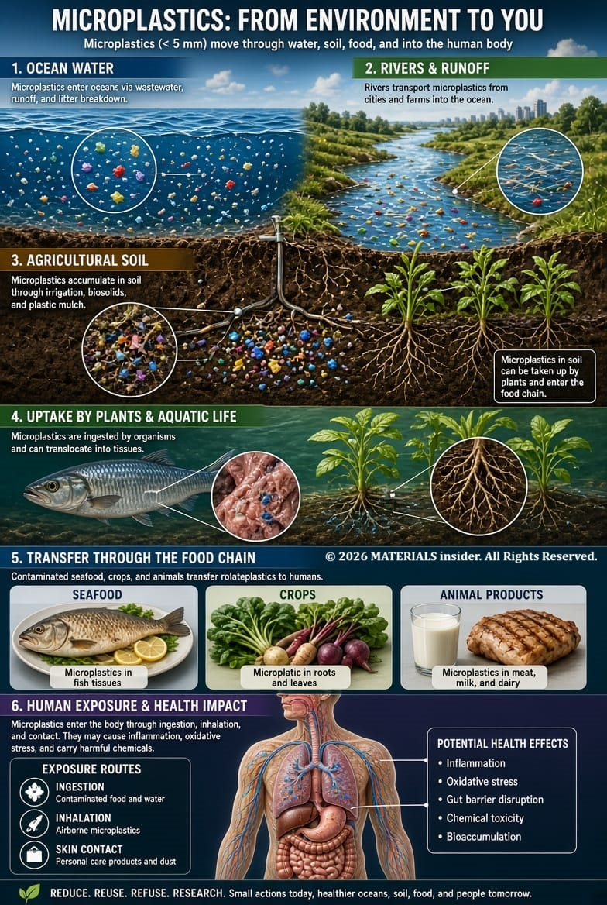
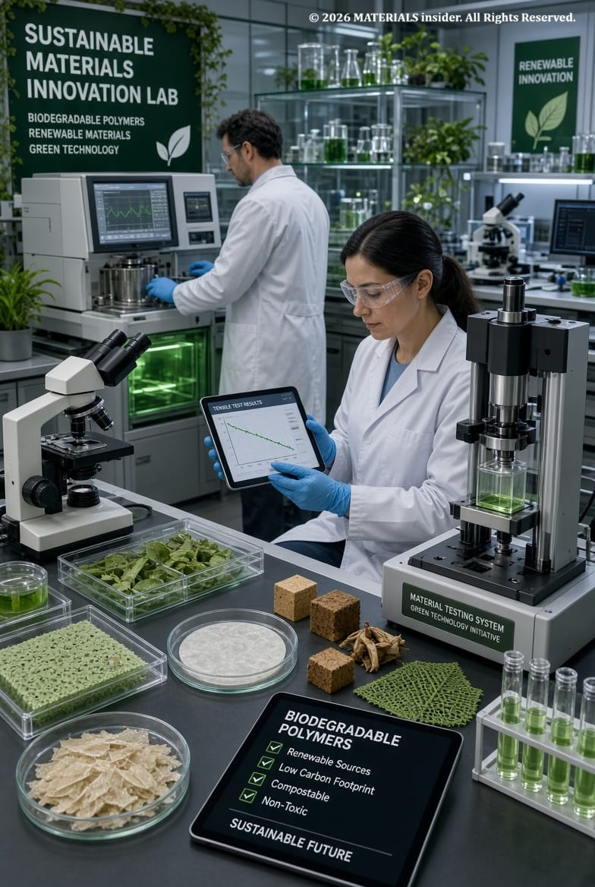

Why Microplastics Are Becoming a Materials Science Problem
Microplastics are no longer just an environmental issue. Learn how polymer degradation, material failure mechanisms, and sustainable design are turning microplastics into one of the biggest challenges in modern materials science.
Microplastics are no longer just an environmental concern. They are increasingly recognized as a materials science challenge because they originate from polymer degradation, material aging, and product lifecycle failures. Understanding how plastics break down is essential for developing safer, more sustainable materials for the future. Microplastics are generally defined as plastic particles smaller than 5 mm and have become widespread in water, soil, air, and living organisms.
Tiny Particles, Big Consequences !
Plastic is one of the most important engineering materials ever developed. Lightweight, durable, corrosion-resistant, and inexpensive, plastics have transformed industries ranging from packaging and healthcare to transportation and electronics. Yet the very characteristics that make plastics successful are also contributing to a growing global challenge.
As plastic products age, weather, and wear out, they gradually break into smaller and smaller fragments known as microplastics. These particles, typically less than 5 millimeters in size, are now found in oceans, rivers, agricultural soils, drinking water, food supplies, and even human tissues. Scientists have identified microplastics in ecosystems across the planet, from tropical oceans to polar regions.
For years, microplastics were viewed mainly as an environmental issue. Today, researchers increasingly recognize them as a materials science problem, one that involves polymer chemistry, degradation mechanisms, material durability, and sustainable design.

How Do Microplastics Form? !
Most microplastics do not begin as microscopic particles. They originate from larger plastic products that gradually deteriorate over time.
A discarded water bottle exposed to sunlight does not simply disappear. Instead, ultraviolet radiation weakens the polymer structure. As the material becomes brittle, wind, waves, temperature fluctuations, and mechanical abrasion break it into smaller fragments. Similar processes occur in packaging materials, agricultural films, automotive components, and household products.
Other major sources include:
- Synthetic textile fibers released during washing
- Vehicle tire wear particles
- Industrial plastic pellets
- Packaging waste
- Cosmetic and personal care products
The OECD identifies textile fibers and tire wear as significant contributors to microplastic emissions worldwide.
From a materials science perspective, the formation of microplastics is fundamentally a material degradation process.
The Science Behind Plastic Breakdown!
All plastics consist of long molecular chains called polymers. These chains give plastics their strength, toughness, flexibility, and durability.
However, polymers are not permanently stable. Over time they experience degradation through several mechanisms:
- Photo-Oxidation: Ultraviolet radiation from sunlight breaks polymer chains and accelerates aging.
- Thermal Degradation: Elevated temperatures cause molecular changes that reduce mechanical properties.
- Hydrolysis: Moisture can chemically attack certain polymers, weakening their structure.
- Mechanical Fatigue: Repeated stress and abrasion create cracks and fractures.
- Chemical Degradation: Pollutants and reactive chemicals can alter polymer structures.
As polymer chains become shorter and weaker, plastics lose their mechanical integrity and begin to fragment.
From this perspective, microplastics are not merely pollution. They are the result of millions of individual material failures occurring on a microscopic scale.

Why Materials Scientists Are Concerned!
Microplastics behave very differently from larger plastic objects.
As plastics fragment into smaller particles, their surface-area-to-volume ratio increases dramatically. This means more surface is available to interact with surrounding chemicals, pollutants, microorganisms, and biological tissues.
Research shows that microplastics can:
- Transport environmental contaminants
- Absorb persistent pollutants
- Enter food chains
- Be inhaled or ingested by living organisms
- Continue degrading into even smaller nanoplastics
Scientists have also found that polymer type plays a critical role. Polyethylene, polypropylene, polyester, nylon, PET, and polystyrene each degrade differently and produce particles with different characteristics. Understanding these differences is essential for predicting environmental behavior and developing mitigation strategies.
For materials scientists, this raises important questions:
- Why do some polymers degrade faster?
- Which additives influence fragmentation?
- How can plastics be redesigned to reduce microplastic generation?
- Can sustainability be improved without sacrificing performance?

Can Better Materials Solve the Problem?
The microplastic challenge is accelerating innovation across the materials industry. Researchers are exploring multiple approaches:
Biodegradable Polymers: Specially designed polymers can break down under specific environmental conditions, reducing long-term persistence.
Improved Polymer Stabilization: Advanced additives and stabilizers can extend product life and minimize fragmentation during use.
Circular Material Design: Products designed for recycling and multiple life cycles reduce the amount of plastic entering the environment.
Bio-Based Materials: Renewable feedstocks provide alternatives to traditional petroleum-derived plastics.
However, no single solution can eliminate microplastics entirely. Materials must still meet demanding requirements for strength, safety, durability, processability, and cost. This balancing act is exactly why microplastics have become a major materials science challenge.
The Future of Plastic Design!
Historically, engineers focused on making plastics stronger, cheaper, and longer-lasting. Today, new priorities are emerging.
Future materials must not only perform well during their service life but also behave responsibly at the end of that life cycle.
Modern materials scientists are increasingly asking:
- How does a polymer age?
- What degradation pathways occur?
- What particles are produced during failure?
- Can fragmentation be minimized?
- How can durability and sustainability coexist?
The answers to these questions may define the next generation of materials engineering.

Final Thoughts!
Microplastics are more than an environmental pollution issue. They represent a direct consequence of how materials interact with the real world long after they leave the factory.
Understanding polymer degradation, material failure mechanisms, environmental aging, and sustainable design principles is becoming increasingly important for engineers, researchers, and manufacturers alike.
The future of plastics may not depend on making stronger materials alone. It may depend on creating smarter materials designed for their entire lifecycle, from manufacturing and use to recovery and disposal.
As materials science continues to evolve, solving the microplastic challenge could become one of the defining engineering achievements of the twenty-first century.
References:
- United Nations Environment Programme (UNEP). Microplastics Report. Definition, environmental prevalence, and emerging concerns regarding microplastics.
- United Nations Environment Programme (UNEP). Microplastics: The Long Legacy Left Behind by Plastic Pollution (2023). Sources, pathways, and impacts of microplastics.
- OECD (2021). Policies to Reduce Microplastics Pollution in Water: Focus on Textiles and Tyres. Overview of sources, emissions, and mitigation strategies.
- U.S. Environmental Protection Agency (EPA). Microplastics Research. Characterization, degradation mechanisms, environmental occurrence, and health-related research.
Top viewed articles:

Self-Healing Materials : The Future of Sustainable & Self Sustainable Materials
A cracked smartphone screen that repairs itself overnight, or a bridge that can automatically fix tiny fractures before they become dangerous. This is not science fiction—these are examples of self-healing materials.
Read Full Article →
Rheopectic Fluids: Time-Dependent Thickening Under Stress
These rare materials gradually increase in viscosity (become thicker) the longer they experience sustained shear stress. Unlike instantaneous shear-thickening (dilatant) behavior, rheopecty requires prolonged agitation: the more you stir or shake (within limits), the more resistant to flow the fluid becomes.
Read Full Article →Share this article: